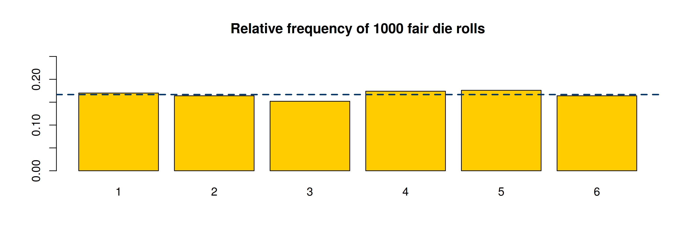
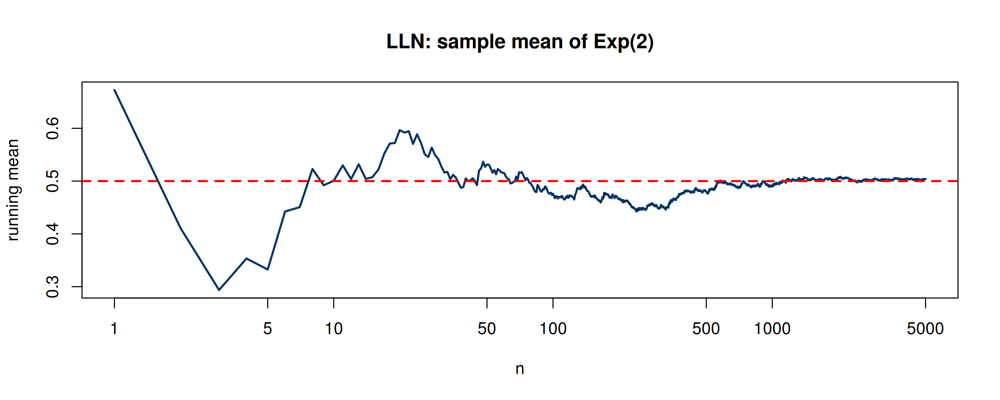
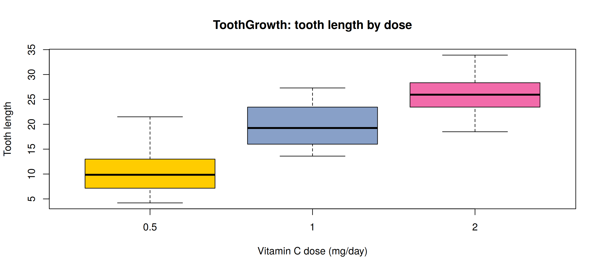
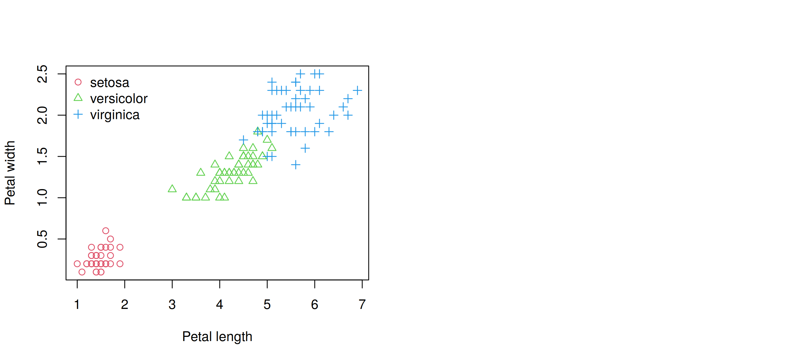
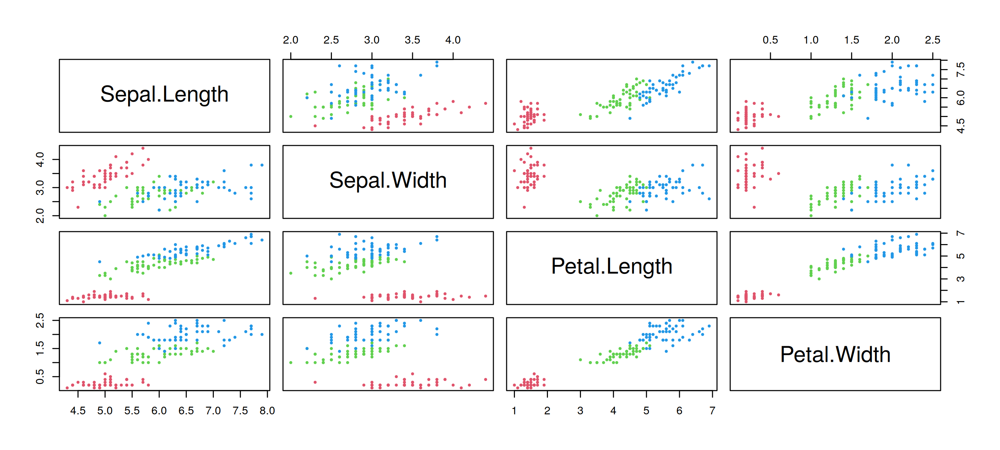
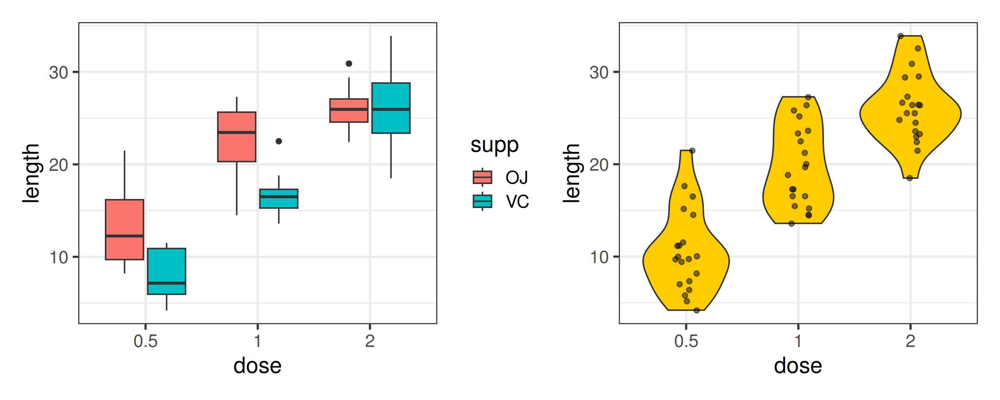
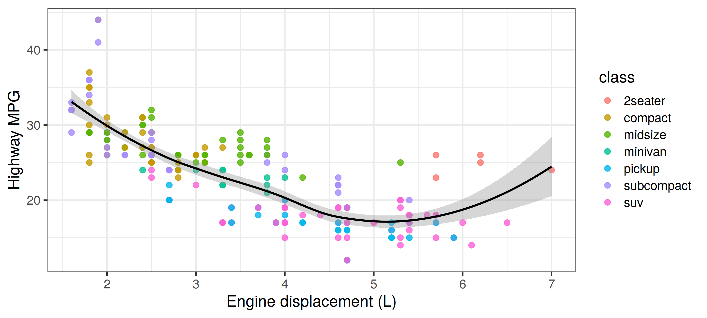

| Block | Topics | Book |
|---|---|---|
| Foundations | R, probability review, regression, ridge/lasso, MOM/MLE/Bayes | Ch 1-2 |
| Simulation | Generating random variables, Monte Carlo integration, variance reduction | Ch 3, 6 |
| Learning | K-means and hierarchical clustering, multivariate visualization | Ch 5 |
| Software | Shiny apps, object-oriented programming, R packages | – |
| Inference | Monte Carlo inference, bootstrap, jackknife, jackknife-after-bootstrap | Ch 7-9 |
| Numerics | Density estimation, numerical methods, optimization, EM, efficient programming | Ch 12-15 |
| Deep learning | Fully connected and convolutional networks in R | – |
Introduction to Statistical Computing 💻
MATH 4750 / MSSC 5750 Computational Statistics
Dr. Mehdi Maadooliat
Marquette University
MATH 4750 - Spring 2027
Introduction to Statistical Computing
What is computational statistics?
The R environment and reproducible workflow
R objects: vectors, matrices, arrays, lists, data frames
Functions, control flow, and vectorization
Graphics and importing data
Computational Statistics vs. Statistical Computing
Statistical computing
- Numerical methods inside statistical software
- Floating-point arithmetic, linear algebra, optimization, root finding, numerical integration
- How
lm(),optim(),integrate()actually work
Computational statistics
- Statistical methods that are made possible by computing
- Simulation, Monte Carlo, bootstrap, jackknife, permutation tests, MCMC, density estimation, clustering, EM
- Replace hard math with many cheap computations
Why can’t we just derive a formula? What happens when the sampling distribution of \(\hat\theta\) is unknown, the sample is small, or the model has no closed-form likelihood?
Course Roadmap
Textbook: M. L. Rizzo, Statistical Computing with R, 2nd ed., Chapman & Hall/CRC, 2019.
Why R?
- Free, open source, runs everywhere (Windows, macOS, Linux)
- Designed by statisticians for data analysis: vectors, data frames, formulas, models
- 20,000+ packages on CRAN (and Bioconductor, GitHub)
- Excellent graphics: base,
lattice,ggplot2 - Reproducible documents: R Markdown / Quarto (these slides!)
- Interfaces to C/C++ (
Rcpp), Python (reticulate), databases, the web
In this course: R first, with Python supplements when they illuminate a point. Everything you see on a slide is code you can run.
The Working Environment
- IDE: RStudio or Positron
- Projects: one folder per assignment (
.Rproj) - Quarto documents (
.qmd) mix text, math, and code - Packages:
install.packages("boot")once;library(boot)every session - Help:
?mean,help.search("bootstrap"),example(sample), vignettes
Reproducibility checklist
- Never rely on objects in your global environment
- Set a seed:
set.seed(4750) - Keep data files in the project folder; use relative paths
- Render the whole document before you submit
- Report
sessionInfo()when asking for help
R as a Calculator
[1] 14[1] 2.718[1] 2[1] FALSE[1] TRUE[1] 120[1] 120[1] 24[1] 3.875[1] 7.554[1] 2.748[1] 3.5Vectors and Vectorized Operations
- Almost everything in R is a vector; operations are element-wise and recycle.
[1] 1 4 9 16 25 36 49 64 81 100[1] 30[1] 0.00 0.25 0.50 0.75 1.00[1] "a" "b" "a" "b" "a" "b"weight
82 Vectorized code is shorter, clearer, and usually much faster than an explicit loop. We will benchmark this in Chapter 15.
Probability Functions: d, p, q, r
| Prefix | Meaning | Example |
|---|---|---|
d |
density / pmf \(f(x)\) | dnorm(0) |
p |
cdf \(F(x)=P(X\le x)\) | pnorm(1.96) |
q |
quantile \(F^{-1}(p)\) | qnorm(0.975) |
r |
random generation | rnorm(5) |
[1] 0.3989[1] 0.975[1] 1.96[1] 9.560 9.689 13.854 8.089 9.190[1] 0.215[1] 0.4232[1] 0.3466Suffixes: norm, binom, pois, exp, gamma, beta, t, chisq, f, unif, geom, nbinom, cauchy, weibull, lnorm, …
Example 1.1: sample() and Simulated Dice
rolls
1 2 3 4 5 6
0.170 0.164 0.152 0.174 0.176 0.164 
Data Frames: Example 1.2 (iris)
'data.frame': 150 obs. of 5 variables:
$ Sepal.Length: num 5.1 4.9 4.7 4.6 5 5.4 4.6 5 4.4 4.9 ...
$ Sepal.Width : num 3.5 3 3.2 3.1 3.6 3.9 3.4 3.4 2.9 3.1 ...
$ Petal.Length: num 1.4 1.4 1.3 1.5 1.4 1.7 1.4 1.5 1.4 1.5 ...
$ Petal.Width : num 0.2 0.2 0.2 0.2 0.2 0.4 0.3 0.2 0.2 0.1 ...
$ Species : Factor w/ 3 levels "setosa","versicolor",..: 1 1 1 1 1 1 1 1 1 1 ... Sepal.Length Sepal.Width Petal.Length Petal.Width Species
1 5.1 3.5 1.4 0.2 setosa
2 4.9 3.0 1.4 0.2 setosa
3 4.7 3.2 1.3 0.2 setosa
4 4.6 3.1 1.5 0.2 setosa Min. 1st Qu. Median Mean 3rd Qu. Max.
1.00 1.60 4.35 3.76 5.10 6.90 Working with Data Frames
Sepal.Length Petal.Length
106 7.6 6.6
118 7.7 6.7
119 7.7 6.9
123 7.7 6.7
132 7.9 6.4
136 7.7 6.1 Species Petal.Length
1 setosa 1.462
2 versicolor 4.260
3 virginica 5.552 setosa versicolor virginica
0.3791 0.3138 0.3225 Matrices and Arrays: Examples 1.3 - 1.4
[,1] [,2] [,3]
[1,] 1 3 5
[2,] 2 4 6[1] 2 3 [,1] [,2]
[1,] 1 2
[2,] 3 4
[3,] 5 6 [,1] [,2] [,3]
[1,] 4 10 16
[2,] 7 15 23 [,1] [,2]
[1,] 0.6 -0.2
[2,] -0.2 0.4[1] 24Example 1.5: iris3 as a 3-d Array
[1] 50 4 3 Setosa Versicolor Virginica
Sepal L. 5.006 5.936 6.588
Sepal W. 3.428 2.770 2.974
Petal L. 1.462 4.260 5.552
Petal W. 0.246 1.326 2.026How would you compute the same table from the iris data frame?
Lists: Examples 1.6 - 1.8
List of 2
$ lengths: int [1:23] 1 3 2 3 2 1 3 1 3 1 ...
$ values : int [1:23] 1 0 1 0 1 0 1 0 1 0 ...
- attr(*, "class")= chr "rle"[1] 8[1] 2 0 1 1 12[1] 0.2[1] "name" "p" "values"Writing Functions
s
2 3 4 5 6 7 8 9 10 11 12
0.029 0.054 0.081 0.114 0.138 0.168 0.141 0.107 0.084 0.055 0.030 What is the exact pmf of the sum of two fair dice? Compare with the simulated frequencies.
Control Flow and the apply Family
A First Simulation: Law of Large Numbers

Graphics
Example 1.9: Parallel Boxplots (base R)

Examples 1.10 - 1.12: Scatterplots, Colors, Symbols
par(mfrow = c(1, 2))
plot(iris$Petal.Length, iris$Petal.Width, pch = as.integer(iris$Species),
col = as.integer(iris$Species) + 1, xlab = "Petal length", ylab = "Petal width")
legend("topleft", legend = levels(iris$Species), pch = 1:3, col = 2:4, bty = "n")
pairs(iris[, 1:4], col = as.integer(iris$Species) + 1, pch = 20, cex = 0.6)

Example 1.13: ggplot2 Boxplots and Violin Plots

Example 1.14: MPG by Engine Displacement

Examples 1.15 - 1.17: Importing and Exporting Data
'data.frame': 5 obs. of 5 variables:
$ Sepal.Length: num 5.1 4.9 4.7 4.6 5
$ Sepal.Width : num 3.5 3 3.2 3.1 3.6
$ Petal.Length: num 1.4 1.4 1.3 1.5 1.4
$ Petal.Width : num 0.2 0.2 0.2 0.2 0.2
$ Species : chr "setosa" "setosa" "setosa" "setosa" ...Always inspect after importing: str(), head(), summary(), and check for NA.
Python Supplement: the Same Ideas in numpy
- In Quarto, Python chunks run through
reticulate(conda envpy39in my setup). - Note: R and Python random-number streams differ even with the same seed.
Summary
- R is a vectorized language: think in vectors, matrices, and lists.
d/p/q/rfunctions give you every standard distribution.- Functions +
sample()+ loops/applyare enough to simulate almost anything. - Graphics: base R for quick looks,
ggplot2for layered, publication-quality plots. - Reproducibility: projects, relative paths, seeds, Quarto.
- Install R, RStudio/Positron, and Quarto. Render this
.qmd. - Work through HW 0 (Learn R) before next class.